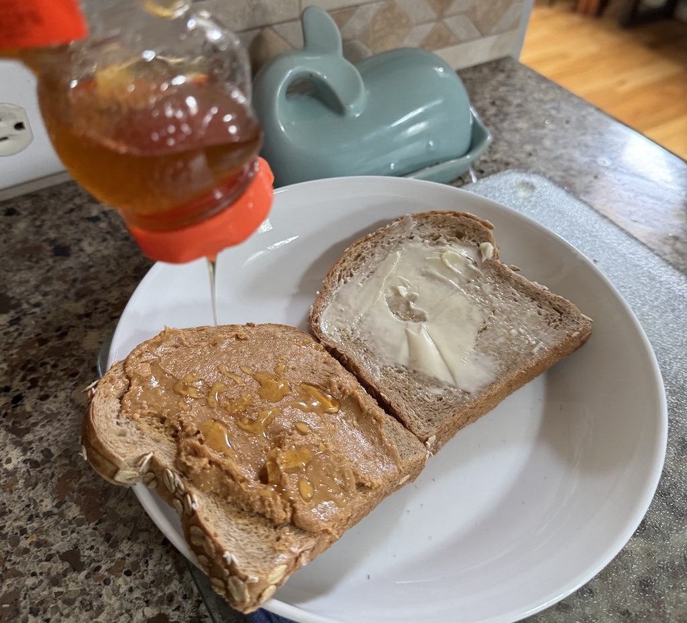

PB2H Sandwich
You're my honey butter, baby.

Description
A variation on the classic peanut butter and jelly sandwich, for butter and honey lovers.
Implements
- Butter knife
- Honey dripper
Ingredients
- 2 slices of sandwich bread
- 1 dollop of peanut butter
- 1 smear of unsalted butter
- 1 drizzle of honey
Steps
- If whole grain, lightly toast the bread to soften
- Apply butter to slice A
- Apply peanut butter to slice B
- Drizzle honey liberally over slice B
- Place slices A and B together with peanut butter, butter, and honey facing inward to help avoid a mess while eating
- Enjoy before others notice!
HOME